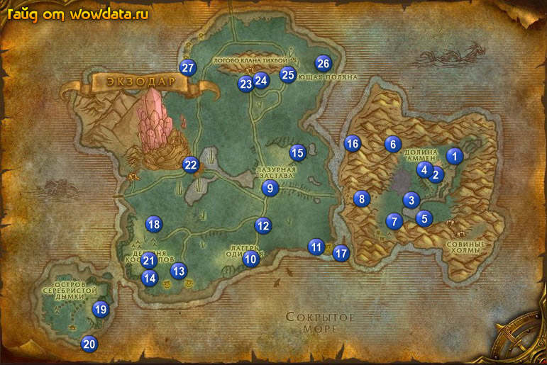

1) После появления, пробегите немного по дороге и начните <Тебе удалось выжить!> 1 (83,44).
2) Закончите <Тебе удалось выжить!> и начните <Исцеляющие кристаллы> 2 (80,46).
3) Чуть дальше по дороге начните <Неустойчивая мутация> 2 (79,46).
4) Пройдите на север и бейте бабочек , пока не соберете 8 квест итемов; и 8 мутантов ( Неустойчивая мутация ).
5) Затем закончите <Неустойчивая мутация> и начните <То, что должно быть сделано…>, и сразу начните у соседнего NPC <Сбор трав>.
6) Закончите <Исцеляющие кристаллы> 2 (80, 46) и начните <Срочная доставка>.
7) Внутри здания закончите <Срочная доставка> 2 (80, 49) и начните <Помощь выжившим>.
8) Подойдите к вашему тренеру (в данном гайде шаман) и закончите квест <Обучение шамана>.
9) Начните <Запасные части> и <Прививка> 2 (79, 51).
10) Ищем больных и юзаем на них рассовую лечилку (нужен всего 1), на полянке 3 (74, 54) делаем 2 квеста <Сбор трав> (сибираем растущие цветы) и <То, что должно быть сделано…> (убивая Мутировавший корнехлест ).
11) Вернитесь и закончите <Сбор трав> и <То, что должно быть сделано…>, начните <Исцеление озера> 4 (79, 47), по дороге закончите <Помощь выжившим> 2 (80, 48) .
12) Идите на юг к 5 (77, 58) и используйте большой розовый кристал .
13) Для удобства поставте кристал на кнопку и идете на восток в Совиная чаща, юзаем кристал на 6 Зараженный совун Совиных холмов. Затем поднимается наверх в Совиная чаща и используйте там [Запчасть для излучателя] для квеста <Запасные части>, будте уверены что вы получите 4 лвл пока будите убивать местных монстров.
14) Пройдите вниз по дороге и закончите <Исцеление озера> 3 (79, 46).
15) Войдите в здание и у своего тренера возмите квест на ваш первый тотем <Зов Земли>
2 (79, 49). А заодно выучите новые умения.
16) Закончите квесты <Запасные части> и <Прививка>, начните <Пропавший разведчик> 2 (79, 51).
17) Идите на северо-запад 6 (71, 40) и закончите <Зов Земли>, затем начните <Зов Земли>, пройдите чуть дальше и помогите убить 4 каменных элементов. После закончите <Зов Земли> и начните <Зов Земли> (след часть цепи). Вернитесь к своему тренеру и закончите <Зов Земли>, теперь у вас есть первый тотем, и вы должны быть 5 лвл.
18) Идите на юго-запад 7 (72, 60), закончите <Пропавший разведчик> и начните <Эльфы крови>. После чего идите и убивайте эльфов и закончите квест.
19) Начните <Шпион эльфов крови>, вернитесь к эльфам, на самом верху будет Геодезист Кандресс (убейте ее), будте уверены что получите [Планы эльфов крови] который начинает <Планы эльфов крови>.
20) Вернитесь к поселку и закончите <Планы эльфов крови> 2 (79, 52), начните <Излучатель>, тут же его закончите и начните <На Лазурную заставу>.
21) Теперь у вас должно быть около 75% на 6 лвл.
22) Бегите на запад 8 (66, 53) и покиньте начальную зону.
23) Начните <Вести с Лазурной заставы>, идите дальше на запад и за речкой начните <Деликатесный красный луциан>.
24) Идем и сеткой ловим рыбу (она есть по всей речке), затем заканчиваем квест и начинаем <Поиски Актеона>. (вы должны стать 6 лвл)
25) Идите на запад пока не доберетесь до 9 (49, 51).
26) Заканчиваем <Поиски Актеона> и начинаем <Великая охота на лунных оленей>.
27) Найдите тренера первой помощи и выучите скил, заодно начните <Ради науки>.
28) Закончите <На Лазурную заставу> и <Вести с Лазурной заставы>, сделайте лагерь вашим домом.
29) Идите на юг к 10 (46, 69) и начните квесты <Печенье Джамбо-Гамбо>, <Начало положено>.
30) Идите на пляж и бейте крабов пока не соберете 6 кусков крабьего мяса. Затем идите на восток до
11 (59, 68), найдите там компас и карту.
31) Вернитесь в 10 (47, 70). Закончите <Начало положено>, начните <Созревший план>, и наконец закончите <Печенье Джамбо-Гамбо>. Теперь вы должны быть 7 лвл.
32) Вам стали доступны 2 новые квеста <Возвращение руин> и <Хрупкие предметы. Не кантовать!>, начните их.
33) Идите на север до первого поворота и затем возьмите на восток, там будут олени ( Лунный олень ), из них падает мясо с дропом 100% на квест <Великая охота на лунных оленей>. Там же будут Корнехват (растения такие) из них падает [Побег корнехвата] с дропом 50% на квест <Ради науки>.
34) У дороги 12 (48, 62) на квест <Созревший план> будет стоять Пустое дерево-выход (пенек такой) и Охапка листьев (цветочки какие-то).
35) Когда закончите вернитесь в Лазурная застава, закончите <Великая охота на лунных оленей> и начните <Великая охота на лунных маралов>, затем закончите <Ради науки> и начните <Другая альтернатива>.
36) Постарайтесь замечать и собирать [Луковица лазурного львиного зева] для квеста <Другая альтернатива>, их можно найти около деревьев.
37)На юго-западе обитают Зараженный ночной ловец-недоросток, бейте их пока не выпадет [Слабо мерцающий кристалл], который начинает <Странные находки>. Заодно идите в 13 (32, 75) и начинайте убивать наг для <Возвращение руин>. По пути вы обязательно найдете [Древняя реликвия] для <Хрупкие предметы. Не кантовать!>. Из наг выпадает [Табличка, покрытая рунами] которая начинает <Руническая табличка> (вторую часть которого можно сделать в 14 (27, 76) но будет проблематично).
38) В лагере закончите <Созревший план> 10 (47, 70) начните <У деревьев есть уши>, затем закончите <Руническая табличка>, после чего начните <Полководец Шрисс.тиз>, закончите <Возвращение руин> и вот вы 8 лвл. Закончите <Хрупкие предметы. Не кантовать!> у археолога.
39) Вернитесь в Лазурная застава и начните <Пропавший рыбак> у Дульви, начните <Изучение языка> прочитайте книгу в вашем инвентаре закончите квест, затем начните <Тотем Коо>.
40) В западной части города закончите <Странные находки> и затем начните <Зачистка от ночных ловцов, остров 2...>.
41) Выучите новые умения, продайте все ненужное и закупитесь едой и водой если необходимо.
42) Идите на север от лагеря и бейте Самец лунного оленя для квеста <Великая охота на лунных маралов>вам не обязательно собрать все шкуры прямо щас.
43) Идите в точку 15 (55, 41) и закончите <Тотем Коо>, тут же начните <Тотем Тикти>, дальше подождите немного, появится дух и даст вам крылья , прыгайте вниз и направляйте на северо - восток (относительно центра карты) и в точке 16 (64, 40) закончите <Тотем Тикти> и начните <Тотем Йора>, снова подождите духа который увеличит вашу скорость передвижения в воде, после чего следуйте в точку 17 (63, 68) и закончите <Тотем Йора>, тут же начните следующую часть <Тотем Варк>, снова дождитесь духа выйдите с ним на берег, после чего он превратит вас в кота, следуйте за ним дальше и в точке 18 (28, 62) закончите <Тотем Варк> и начните следующую часть <Пророчество Акиды>, тут вы должны освободить 8 Пленник из племени Тихвой, ключи от клеток дропаются из охранников.
44) Идите на восток или юго-восток и дособирайте кожу оленей и набейте 8 [Снежок] для квеста <Зачистка от ночных ловцов, остров 2...> (с квестом можно пока не спешить, тигров также много за дорогой от лагеря до столицы).
45) Идите на остров 19 (18, 83) там будет флаг для квеста <У деревьев есть уши>, используйте [Набор маскировки под дерево] около флага, вас превратит в дерево, подслушайте предателя.
46) На острове найдите Коулен 20 (17, 94) и закончите <Пропавший рыбак>, у него же начните <Останки семьи>. Затем идите на север к домику и убивайте мобов пока не выпадет квестовый элемент, закончите <Останки семьи>.
47) Идите в пещеру 21 (27, 70) и делайте квест <Полководец Шрисс'тиз>. Вернитесь по камню в Лазурная застава.
48) Подойдите к алхимику и закончите <Другая альтернатива>.
49) Закончите <Пророчество Акиды> 9 (49, 51) и начните <Логово племени Тихвой>.
50) Подойдите к тренеру охотников 9 (50, 52) и закончите <Великая охота на лунных оленей>.
51) Идите на юг 10 (47, 70) и закончите <У деревьев есть уши>, начните <Не ведая пощады>, рядом у принцессы закончите <Полководец Шрисс'тиз>.
52) Ищем неподалеку уже известного нам гнома (предателя) говорим с ним, а потом убиваем, получаем письмо и счастливые идем сдавать квест. Затем начинаем последнюю часть <Избавь их от лукавого...>.
53) Возвращаемся в Лазурная застава и заканчиваем 2 квеста: <Зачистка от ночных ловцов, остров 2...> и <Избавь их от лукавого...>, теперь вы должны быть 10 лвл. (выучите новые скилы)
54) Начните <Время пришло>, затем подойдите к тренеру шамана (только если вы уже 10 лвл) и начните <Зов Огня>.
55) Идите по дороге в Экзодар 22.
56) В Экзодар ищите торговца слонами (он справой стороны как войдете), закончите у него <Время пришло> и начните <Элекки – это серьезно>.
57) Идите на северо-восток в 23 (44, 23), и начните квесты: <Звери Судного дня!>
и <Мурлоки... За что нам эта напасть?>.
58) Пройдите чуть чуть на северо-восток и закончите <Логово племени Тихвой> 24 (47, 21).
59) Идите дальше на северо-восток через дорогу 25 (53, 21) и убивайте Опустошитель обыкновенный ради их шкуры (умения снятия шкур не нужно) для квеста <Звери Судного дня!>.
60) Идем в 26 (59, 18) и заканчиваем <Зов Огня>, затем берем следующую часть цепи этих квестов.
61) Вернитесь в Логово племени Тихвой и закончите <Звери Судного дня!>.
62) Подойдите к шефу 24 (47, 21) начните <Обыск Логова племени Тихвой> и <Вождь Умуру>.
63) Идите в пещеру и бейте Безумный дикосовух до тех пор, пока не выпадет [Ритуальный факел], и убейте Вождь Умуру. В конце пещеры в озере есть маленький островок (глыба большая) на нем красный кристал , используйте его и начните квест <Кровавые кристаллы>.
64) Выйдете из пещеры и закончите квесты: <Кровавые кристаллы> и <Вождь Умуру>.
65) Чуть правее начните квест <Куркен> вернитесь в пещеру и убейте Куркен , после чего закончите квест. Затем начните квест <Шкура куркена> и закончите его у тренера лезерворкинга 23 (45, 24), который слева и чуть южнее.
66) Вернитесь к 26 (59, 18) и закончите <Зов Огня>, начните след. часть квеста.
67) Начините квест 24 (47, 21) <Предупреди свой народ>.
68) Идите на запад 27 (34, 18) и собирайте [Зерно Тихвой] для квеста <Мурлоки... За что нам эта напасть?>. Так же найдите и убейте Мургургул из него падает [Клок шерсти Гурфа], и начинает квест с таким же названием.
69) Вернитесь к лагерю у пещеры и закончите оба квеста: <Мурлоки... За что нам эта напасть?> и <Клок шерсти Гурфа>.
70) Теперь вы должны быть 12 лвл.
71) Выучите новые скилы и отправляйтесь в Темные берега